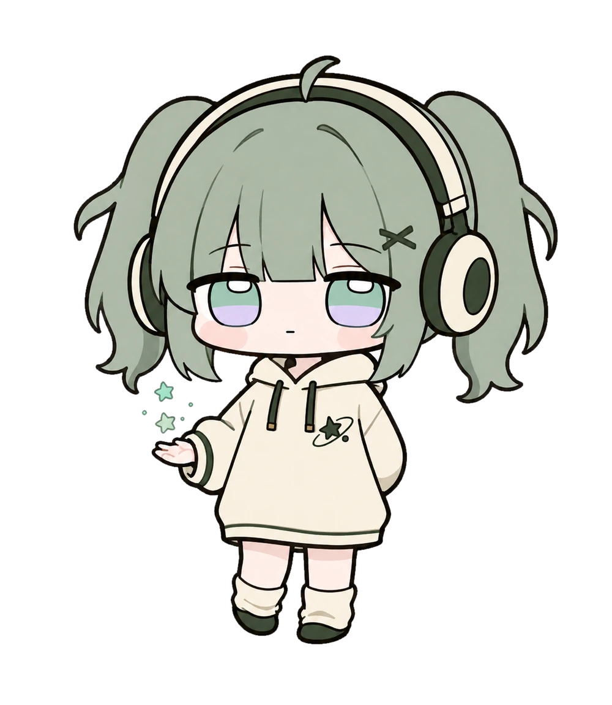
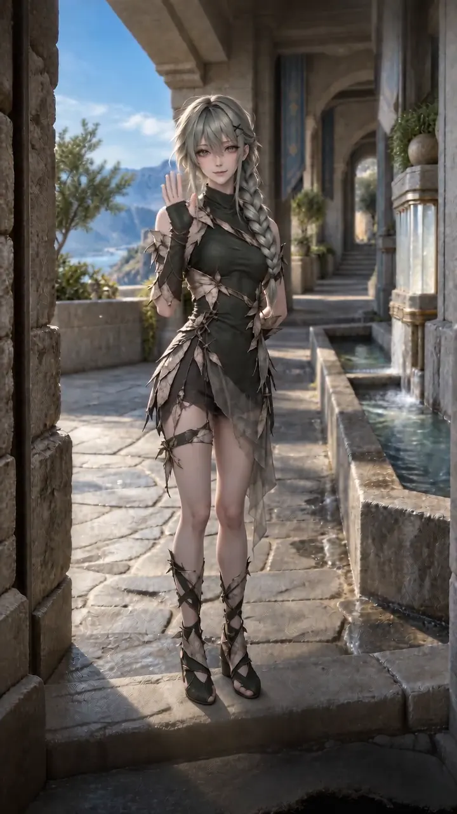

Two worlds, one invitation.

01 / Character world
JIN with Phoebe
Phoebe, Nuonuo and chibi Sera meet visitors through light social stories. Their three-character welcome film is in progress.
Visit JIN with Phoebe ↗
02 / Character world
Sera
Character development, cinematic CG and worldbuilding. Watch Sera's greeting beside the water channel.
Watch the greeting film ↗